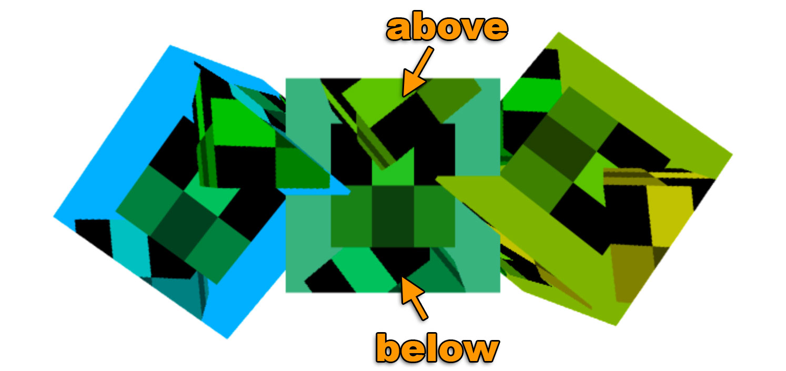
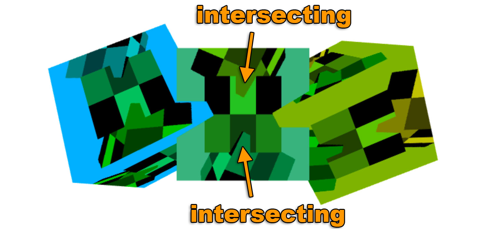

Cet article est la suite d’une série d’articles sur WebGL2. Le premier a commencé par les bases et le précédent portait sur la transmission de données aux textures. Si vous ne les avez pas lus, veuillez les consulter d’abord.
Dans le dernier article, nous avons vu comment fournir des données depuis JavaScript aux textures. Dans cet article, nous allons faire le rendu vers des textures avec WebGL2. Notez que ce sujet a été brièvement abordé dans le traitement d’images mais couvrons-le plus en détail.
Faire le rendu vers une texture est assez simple. Nous créons une texture d’une certaine taille
// créer la texture cible du rendu
const targetTextureWidth = 256;
const targetTextureHeight = 256;
const targetTexture = gl.createTexture();
gl.bindTexture(gl.TEXTURE_2D, targetTexture);
{
// définir la taille et le format du niveau 0
const level = 0;
const internalFormat = gl.RGBA;
const border = 0;
const format = gl.RGBA;
const type = gl.UNSIGNED_BYTE;
const data = null;
gl.texImage2D(gl.TEXTURE_2D, level, internalFormat,
targetTextureWidth, targetTextureHeight, border,
format, type, data);
// définir le filtrage pour ne pas avoir besoin de mips
gl.texParameteri(gl.TEXTURE_2D, gl.TEXTURE_MIN_FILTER, gl.LINEAR);
gl.texParameteri(gl.TEXTURE_2D, gl.TEXTURE_WRAP_S, gl.CLAMP_TO_EDGE);
gl.texParameteri(gl.TEXTURE_2D, gl.TEXTURE_WRAP_T, gl.CLAMP_TO_EDGE);
}
Remarquez que data vaut null. Nous n’avons pas besoin de fournir de données. Nous avons juste besoin
que WebGL alloue la texture.
Ensuite, nous créons un framebuffer. Un framebuffer est juste une collection d’attachments. Les attachments sont soit des textures soit des renderbuffers. Nous avons déjà vu les textures. Les renderbuffers sont très similaires aux textures mais ils supportent des formats et des options que les textures ne supportent pas. De plus, contrairement à une texture, vous ne pouvez pas utiliser directement un renderbuffer comme entrée d’un shader.
Créons un framebuffer et attachons-y notre texture
// Créer et lier le framebuffer
const fb = gl.createFramebuffer();
gl.bindFramebuffer(gl.FRAMEBUFFER, fb);
// attacher la texture comme premier attachment couleur
const attachmentPoint = gl.COLOR_ATTACHMENT0;
gl.framebufferTexture2D(
gl.FRAMEBUFFER, attachmentPoint, gl.TEXTURE_2D, targetTexture, level);
Tout comme les textures et les buffers, après avoir créé le framebuffer, nous devons
le lier au point de liaison FRAMEBUFFER. Après cela, toutes les fonctions liées aux
framebuffers référencent le framebuffer qui y est lié.
Avec notre framebuffer lié, chaque fois que nous appelons gl.clear, gl.drawArrays ou gl.drawElements, WebGL
va faire le rendu dans notre texture plutôt que dans le canvas.
Reprenons notre code de rendu précédent et transformons-le en fonction pour pouvoir l’appeler deux fois. Une fois pour faire le rendu vers la texture et à nouveau pour faire le rendu vers le canvas.
function drawCube(aspect) {
// Indiquer d'utiliser notre programme (paire de shaders)
gl.useProgram(program);
// Lier l'ensemble attribut/buffer que nous voulons.
gl.bindVertexArray(vao);
// Calculer la matrice de projection
- var aspect = gl.canvas.clientWidth / gl.canvas.clientHeight;
var projectionMatrix =
m4.perspective(fieldOfViewRadians, aspect, 1, 2000);
var cameraPosition = [0, 0, 2];
var up = [0, 1, 0];
var target = [0, 0, 0];
// Calculer la matrice de la caméra avec lookAt.
var cameraMatrix = m4.lookAt(cameraPosition, target, up);
// Créer une matrice de vue à partir de la matrice de caméra.
var viewMatrix = m4.inverse(cameraMatrix);
var viewProjectionMatrix = m4.multiply(projectionMatrix, viewMatrix);
var matrix = m4.xRotate(viewProjectionMatrix, modelXRotationRadians);
matrix = m4.yRotate(matrix, modelYRotationRadians);
// Définir la matrice.
gl.uniformMatrix4fv(matrixLocation, false, matrix);
// Indiquer au shader d'utiliser l'unité de texture 0 pour u_texture
gl.uniform1i(textureLocation, 0);
// Dessiner la géométrie.
var primitiveType = gl.TRIANGLES;
var offset = 0;
var count = 6 * 6;
gl.drawArrays(primitiveType, offset, count);
}
Notez que nous devons passer l’aspect pour calculer notre matrice de projection
car notre texture cible a un rapport d’aspect différent de celui de la caméra.
Voici comment nous l’appelons
// Dessiner la scène.
function drawScene(time) {
...
{
// faire le rendu dans notre targetTexture en liant le framebuffer
gl.bindFramebuffer(gl.FRAMEBUFFER, fb);
// faire le rendu du cube avec notre texture 3x2
gl.bindTexture(gl.TEXTURE_2D, texture);
// Indiquer à WebGL comment convertir du clip space en pixels
gl.viewport(0, 0, targetTextureWidth, targetTextureHeight);
// Effacer le canvas ET le depth buffer.
gl.clearColor(0, 0, 1, 1); // effacer en bleu
gl.clear(gl.COLOR_BUFFER_BIT | gl.DEPTH_BUFFER_BIT);
const aspect = targetTextureWidth / targetTextureHeight;
drawCube(aspect)
}
{
// faire le rendu vers le canvas
gl.bindFramebuffer(gl.FRAMEBUFFER, null);
// faire le rendu du cube avec la texture dans laquelle nous venons de faire le rendu
gl.bindTexture(gl.TEXTURE_2D, targetTexture);
// Indiquer à WebGL comment convertir du clip space en pixels
gl.viewport(0, 0, gl.canvas.width, gl.canvas.height);
// Effacer le canvas ET le depth buffer.
gl.clearColor(1, 1, 1, 1); // effacer en blanc
gl.clear(gl.COLOR_BUFFER_BIT | gl.DEPTH_BUFFER_BIT);
const aspect = gl.canvas.clientWidth / gl.canvas.clientHeight;
drawCube(aspect)
}
requestAnimationFrame(drawScene);
}
Et voilà le résultat
Il est EXTRÊMEMENT IMPORTANT de se souvenir d’appeler gl.viewport et de le régler sur
la taille de ce vers quoi vous faites le rendu. Dans ce cas, la première fois que nous faisons le rendu
vers la texture, nous réglons le viewport pour couvrir la texture. La 2ème
fois, nous faisons le rendu vers le canvas, donc nous réglons le viewport pour couvrir le canvas.
De même, quand nous calculons une matrice de projection,
nous devons utiliser le bon aspect pour ce vers quoi nous faisons le rendu. J’ai perdu d’innombrables
heures à déboguer en me demandant pourquoi quelque chose se rendu bizarrement ou ne se rendait
pas du tout pour finalement découvrir que j’avais oublié l’un ou les deux : appeler gl.viewport
et calculer le bon aspect. C’est si facile à oublier que maintenant j’essaie de ne jamais appeler
gl.bindFramebuffer directement dans mon propre code. À la place, je crée une fonction qui fait les deux,
quelque chose comme
function bindFramebufferAndSetViewport(fb, width, height) {
gl.bindFramebuffer(gl.FRAMEBUFFER, fb);
gl.viewport(0, 0, width, height);
}
Et ensuite je n’utilise que cette fonction pour changer ce vers quoi je fais le rendu. Ainsi, je n’oublierai pas.
Une chose à noter est que nous n’avons pas de depth buffer sur notre framebuffer. Nous n’avons qu’une texture. Cela signifie qu’il n’y a pas de test de profondeur et que la 3D ne fonctionnera pas. Si nous dessinons 3 cubes, nous pouvons le constater.
Si vous regardez le cube du centre, vous verrez que les 3 cubes verticaux dessinés dessus : l’un est en arrière, l’un est au milieu et l’autre est devant, mais nous les dessinons tous les 3 à la même profondeur. En regardant les 3 cubes horizontaux dessinés sur le canvas, vous remarquerez qu’ils se croisent correctement. C’est parce que notre framebuffer n’a pas de depth buffer mais notre canvas en a un.

Pour ajouter un depth buffer, nous créons une texture de profondeur et nous l’attachons à notre framebuffer.
// créer une texture de profondeur
const depthTexture = gl.createTexture();
gl.bindTexture(gl.TEXTURE_2D, depthTexture);
// créer un depth buffer de la même taille que la targetTexture
{
// définir la taille et le format du niveau 0
const level = 0;
const internalFormat = gl.DEPTH_COMPONENT24;
const border = 0;
const format = gl.DEPTH_COMPONENT;
const type = gl.UNSIGNED_INT;
const data = null;
gl.texImage2D(gl.TEXTURE_2D, level, internalFormat,
targetTextureWidth, targetTextureHeight, border,
format, type, data);
// définir le filtrage pour ne pas avoir besoin de mips
gl.texParameteri(gl.TEXTURE_2D, gl.TEXTURE_MIN_FILTER, gl.NEAREST);
gl.texParameteri(gl.TEXTURE_2D, gl.TEXTURE_MAG_FILTER, gl.NEAREST);
gl.texParameteri(gl.TEXTURE_2D, gl.TEXTURE_WRAP_S, gl.CLAMP_TO_EDGE);
gl.texParameteri(gl.TEXTURE_2D, gl.TEXTURE_WRAP_T, gl.CLAMP_TO_EDGE);
// attacher la texture de profondeur au framebuffer
gl.framebufferTexture2D(gl.FRAMEBUFFER, gl.DEPTH_ATTACHMENT, gl.TEXTURE_2D, depthTexture, level);
}
Et voilà le résultat.
Maintenant que nous avons un depth buffer attaché à notre framebuffer, les cubes intérieurs se croisent correctement.

Il est important de noter que WebGL ne garantit que certaines combinaisons d’attachments fonctionnent. Selon la spécification, les seules combinaisons d’attachments garanties sont :
COLOR_ATTACHMENT0 = texture RGBA/UNSIGNED_BYTECOLOR_ATTACHMENT0 = texture RGBA/UNSIGNED_BYTE + DEPTH_ATTACHMENT = renderbuffer DEPTH_COMPONENT16COLOR_ATTACHMENT0 = texture RGBA/UNSIGNED_BYTE + DEPTH_STENCIL_ATTACHMENT = renderbuffer DEPTH_STENCILPour toute autre combinaison, vous devez vérifier si le système/GPU/pilote/navigateur de l’utilisateur supporte cette combinaison. Pour vérifier, créez votre framebuffer, créez et attachez les attachments, puis appelez
var status = gl.checkFramebufferStatus(gl.FRAMEBUFFER);
Si le status est FRAMEBUFFER_COMPLETE, alors cette combinaison d’attachments fonctionne pour cet utilisateur.
Sinon, elle ne fonctionne pas et vous devrez faire autre chose, comme dire à l’utilisateur qu’il n’a pas de chance
ou utiliser une autre méthode de repli.
Si vous ne l’avez pas encore fait, consultez simplifier WebGL avec moins de code et plus de plaisir.